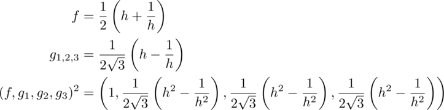
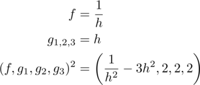
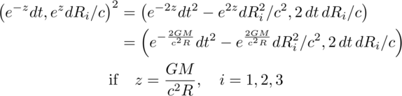
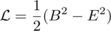
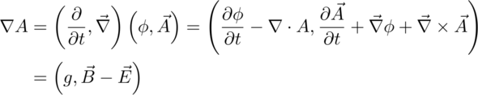
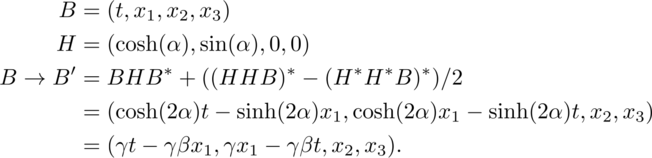

Quaternion Space-times-time Invariance as Gravity*
D. B. Sweetser
March 31, 2015
*Essay written for the Gravity Research Foundation 2015 Awards for Essays on Gravitation
39 Drummer Road, Acton, MA 01720
sweetser@alum.mit.edu
Abstract
The square of a quaternion luckily has the Lorentz invariant interval of
special relativity as its first term. The other three space-times-time
terms are commonly ignored. Ways to vary a quaternion with a continuous
function that leave the intraval in the square invariant are discussed.
One method uses exponentials, leading to the hyperbolic functions found
useful in special relativity. Using the same approach to keep the
space-times-time invariantleads to a dynamic interval term. By preserving
the space-times-time terms using an exponential function and the geometric
source mass, an interval term is found that is similar but experimentally
distinct from the Schwarzschild metric applied to space-time 4-vectors.
Space-times-time invariance is not a field theory, so gravitons are not
necessary and quantization is moot.
General relativity, Einstein's elegant theory of gravity, is a field theory like the three other fundamental forces of Nature: electromagnetism, the weak force, and the strong force. The cause of gravity is any form of energy or momentum. The field equations dictate the motion of particles with energy, thus applying to all particles, even light.
Special relativity is not a special case of general relativity, despite the name. Special relativity is about an invariant quantity in Nature that all inertial observers agree upon: the interval, a difference of squares in measurements of space and time. Special relativity applies to all measurements, even those involving the fundamental forces. The product of a measurement in space and one in time, referred to hereafter as space-times- time, will change in known ways for different inertial observers.1
This essay explores the opposite situation: what if two observers find their space-times-time was an invariant, but their intervals were different? It is suggestive that a defining characteristic of general relativity is that intervals vary at different places in a gravitational field.
The invariant interval of special relativity in flat spacetime is generated by contracting a 4-vector using the Minkowski metric. With such a simple system, other products are omitted, namely, any with the space-times-time form, dtdxi. Such terms could appear if one used a metric with non-diagonal components which are unnecessary for flat spacetime.
There is a type of math that naturally embraces space-times-time terms. All are familiar with real numbers, a mathematical field that allows for addition, subtraction, multiplication, and division. The complex numbers are also a mathematical field, but now one has two degrees of freedom, often represented by a pair of numbers.2 Complex numbers are no longer a totally ordered set. The next sort of numbers has four-part harmonies, with a real bass and three imaginary tenors. Known as the quaternions, they do not commute, so live with the label of a division algebra. Quaternions still retain addition, subtraction, multiplication, and division. The rules are similar for the complex numbers, with the imaginary i replaced by an imaginary 3-vector and the inclusion of the anti-symmetric cross product. Quaternions play a minor technical role as the best way to do rotations in three dimensions.[8] A unit quaternion SU(2) sits in the center of the standard model gauge symmetries. Despite that central role, quaternions have historically been vilified to a comic degree.
"Quaternions came from Hamilton after his really good work had been done; and
though beautifully ingenious, have been an unmixed evil to those who have
touched them in any way, including Maxwell."
Lord Kelvin[10, See vol. II, p. 1070.]
There are published claims that one cannot write the Maxwell equations or represent the Lorentz group using real-valued quaternions.[2, 4, 6, 9] Neither happens to be true. See the appendix for details if interested.
The square of a space-time measurement represented with quaternions is:

The first term of the square is the Lorentz invariant interval. It is followed by the three space-times-time terms. There are a few advantages to having these three extra bits of information. Say two inertial observers Alice and Bob saw a collection of events. The first term of the square of the quaternion would be the same. An analysis of the space-times-time value would let us know how Alice was moving relative to Bob. If they also calculate the product of two different events in both orders, then we would know something about the angle between the events and the observer. If ab = ba, then they are in a straight line. If for the three space-times-time terms, ab = -ba , they are at a right angle. Anything between those extremes is in between.
What happens in curved space-time? With the standard machinery of differential geometry, a simple subtraction is not allowed. Instead, one has to parallel transport one event to another along a geodesic using a known connection. Then the subtraction can be done properly.
Quaternions don't have a metric. Without a metric, there is no connection. Maybe quaternions are an "unmixed evil." Let's explore anyway.
Construct a quaternion out of space-time functions that can be varied, yet the first term of the square is invariant as required by special relativity:

If the function f was exactly the same as each normalized gi, then the first term in the square, the interval, would always be zero.3 This is an important case: it is light. Changes in time are exactly equal to the magnitude of changes in space.
With zero covered, find a way so the first term in the square is equal to one for all inertial observers. The square of f must cancel out the square of g, but leave unity behind. Work with a third function h and its inverse:

So long as the function h has an inverse, this will always work.4 Exponential functions play an important role in theoretical physics. If the exponent is zero, unity is the result and nothing is changed. For tiny exponents, the result may contain a simple harmonic oscillator which are ubiquitous in Nature. For the case in hand, the function f is a hyperbolic cosine which is the stretch factor gamma of special relativity. The function g is the hyperbolic sine, the gamma beta factor that also appears in special relativity.
Repeat these two simple math exercises for space-times-time. Find a general way to make the square of a measurement have either three zeroes or three ones - times the factor of two that is from the sum of two identical terms. Generating three zero space-times-time factors is easy: take the norm of any quaternion. Some effort has gone into quantum mechanics that uses quaternions in place of complex numbers.[1] That topic is beyond the scope of this short essay. The general way to generate three factors of two is also not difficult:

An exponential function could be plugged in as before. This moves from a pure math exercise to one with physics content if the exponential is chosen to be related to gravity by using the geometric length of a mass5:

Let's pause to discuss this expression. No metric was used to get here. No field equation was solved. Instead a new invariance of Nature has been proposed as it applies to products of quaternions in a weak gravitational system characterized by one length. Algebraically, the first term is the same as the Rosen exponential metric applied to an event 4-vector.[7]
Experimental tests of weak gravity fields use the first three terms of the Taylor series expansion in z for the change in time, and the first two for changes in space. Those terms are identical for the space-times-time invariant expression and the Schwarzschild metric in Cartesian coordinates. There is no way to distinguish these two at what is called first-order Parameterized Post- Newtonian (PPN) accuracy. At second order, the new invariance proposal predicts 6% more bending of light around a gravitational source.[3] Since the effect is smaller than a micro-arcsecond, that is beyond our reach today.
Massless light is bent by gravity. That can be accounted for in general relativity because the coupling is to energy density which light has. With the space-times-time invariance, there is no coupling term nor any field equations. The same thing happens in special relativity: there is no coupling, nor field equations. The space-times-time invariance may be the correct variation on the invariant interval of special relativity, thus being the simplest pure geometry approach to gravity, but not too simple.
With no graviton to quantize, there is no issue of quantizing a gravitational field. What about energy loss by a binary pulsar? The Rosen metric allows for a dipole mode of gravity wave emission, so is ruled out by the data which requires a lower rate of gravity wave emissions.[11, See section 12.3(b).] In the space-times-time invariant proposal, the exponential function and its inverse applied to gravity above was static. Make it dynamic by including a time factor in a way consistent with how we see the metric change in time for a binary pulsar.
Is a graviton required to carry away the energy? The system in question is an isolated binary pulsar that conserves both energy and momentum. It does not have a dipole moment like a magnet, but does have a quadruple moment, like a wobbling water balloon. The energy could be carried away by an electromagnetic field that had a quadruple as its lowest moment. While unusual, it is possible.
Does gravity as a space-times-time invariance play nicely with the three other fundamental forces of physics? Given the stellar record of special relativity, there is reason to hope.
Appendix: Maxwell equations and the Lorentz group using real-valued
quaternions
The homogeneous Maxwell equations are vector identities. They hold when written using quaternions. The Lagrange density used to derive the Maxwell source equations is the difference of the squared magnetic and electric fields[5]:

The difference of two squares is the product of their sums and difference. The simplest product of a quaternion differential operator and potential generates the difference of the magnetic and electric fields:

This also has a gauge field g which can easily be eliminated by subtracting the conjugate of this product. The sum of these two fields - times a factor of minus one - is formed by reversing the order of the differential with the potential:

The first term drops into the Euler-Lagrange equations to generate the Gauss and Ampere laws of electromagnetism. As a bonus, there is the Poynting vector, the directional energy flux density of an electromagnetic field.
Representing the compact Lie group needed to do spatial rotations is itself compact when using quaternions:

If one tries to simply change from the cosine and sine function to the hyperbolic cosine and sine function, a member of the Lorentz group is not generated. This should not be a surprise since that group is not compact, a non-trivial change. Other terms are required to pull off the trick:

Quaternions provide another way to write these expressions. Nothing new is learned, other than to be skeptical of claims about the limitations of quaternions.
Bibliography
[1] S. L. Adler. Quaternionic Quantum Mechanics and Quantum Fields. Oxford University Press, 1995.
[2] A. W. Conway. On the application of quaternions to some recent developments of electrical theory. Proc. Roy. Irish Acad., 29:1-9, 1911.
[3] R. Epstein and I. I. Shapiro. Post-post-newtonian deflection of light by the sun. Phys. Rev. D, 22(12):2947-2949, 1980.
[4] P. R. Girard. The quaternion group and modern physics. Eur. J. Phys., 5:25-32, 1984.
[5] J. D. Jackson. Classical Electrodynamics, Second Edition. John Wiley and Sons, 1975.
[6] J. Lambek. If hamilton had prevailed: quaternions in physics. Mathematical Intelligencer, 17(4), 1995.
[7] N. Rosen. A bi-metric theory of gravitation. General Relativity Gravitation, 4(6):435-447, 1973.
[8] E. Salamin. Application of quaternions to computation with rotations. Internal Working Paper, Santford Artificial Intelligence Lab, pages 1-9, 1979.
[9] L. Silberstein. Quaternionic form of relativity. Phil. Mag., 23(137):790-809, 1912.
[10] S. P. Thompson. The Life of William Thomson, Baron Kelvin of Largs, volume II. Macmillan, 1910.
[11] C. M. Will. Theory and experiment in gravitational physics: Revised edition. Cambridge University Press, 1993.
Footnotes
-
How space-times-time changes under a Lorentz transformation is somewhat complicated. ↩
-
Deeper insights can sometimes be found working on a complex manifold, C^1^ using a complex number and its conjugate instead of R^2^. ↩
-
The normalization depends on the count of non-zero g factors, 1 over the square root of 3 if none are zero. ↩
-
Adjusting the normalization factor as needed. ↩
-
The coordinate-independent formulation is that the product of time and the norm of space is invariant in a gravitational field. ↩